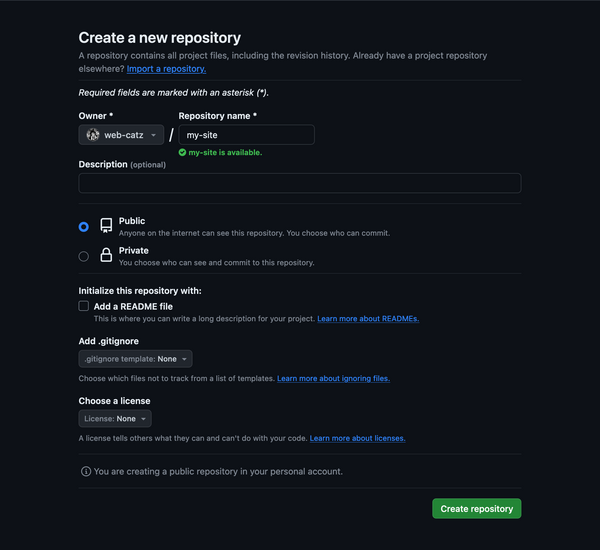
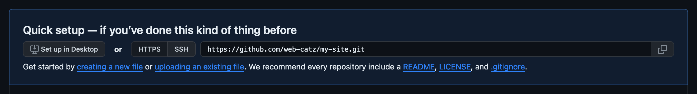

do you edit your site files locally but hate manually uploading everything to neocities? try deploying your neocities with github!
this how-to assumes you have no prior experience with git, so i'll keep things as simple as possible and guide you through all the commands you'll need. keep in mind that this how-to is written by a mac user, so if you run into any issues on a different OS let me know and i'll update the page accordingly.
git is a tool that helps you track and archive any changes you make inside a folder. if you edit your site files locally (like i do) you can turn your site folder into a repository (fancy name for folders that use git) and:
Torvalds sarcastically quipped about the name git (which means "unpleasant person" in British English slang): "I'm an egotistical bastard, and I name all my projects after myself. First 'Linux', now 'git'." The man page describes Git as "the stupid content tracker".
The read-me file of the source code elaborates further:
"git" can mean anything, depending on your mood.
- Random three-letter combination that is pronounceable, and not actually used by any common UNIX command. The fact that it is a mispronunciation of "get" may or may not be relevant.
- Stupid. Contemptible and despicable. Simple. Take your pick from the dictionary of slang.
- "Global information tracker": you're in a good mood, and it actually works for you. Angels sing, and a light suddenly fills the room.
- "Goddamn idiotic truckload of sh*t": when it breaks.
The source code for Git refers to the program as "the information manager from hell".
convinced yet? these next three sections will walk you through how to set up a repository for your site files and use it to deploy to neocities. if you're intimidated, don't worry—it's not that hard, and once you've reached the end of this how-to you won't have to worry about 99% of this ever again.
you can check if you already have git installed by opening up the command line and running git. if it shows you a list of commands, you already have git installed.
if you don't have git installed, head over to the git downloads and follow the instructions there.
the remote repository is the repository (remember: fancy name for a git folder) hosted on github. before you set up your local repository, or the one on your computer, you'll first need to create your remote repository.
if you haven't already, you'll need to make a github account. once you've set your account up, make your remote repository. you can name it whatever you'd like. make sure you leave it empty—no readmes, gitignores, licenses, anything.

to connect to the remote repository from your computer, you need to confirm that you are who you say you are—no one but you should be able to mess with your files! to confirm your identity, you'll need a personal access token, which acts like a password. (there are also other ways of doing this—if you have ssh set up, skip this step and use ssh urls in the next step instead.) here's how to make a token! it might look complicated, but it's just a lot of clicking buttons:
you've now generated a personal access token! remember that you can always come back to this page to copy your token. also remember that this lets anyone mess with your remote repository, so (gets really close to you like gandalf) keep it secret... hhhhgh... keep it safe....
this is another bit of text you'll need to connect to your remote repository. it's pretty easy to grab—just go to github.com and open your repository's page. if you created your repository right (empty), you'll see your repository's https url right in the middle of the page.

it should look like this: https://github.com/username/repository-name.git. if it doesn't, click "https" on the button directly to the left. leave the tab open and come back for the url later (we'll need it!).
if you don't have one already, create the folder you'll be storing your site files in. we WILL NOT be directly running stuff in this folder, for reasons i'll explain later. put the folder you're storing your site files in inside a new empty folder. this is what i'm gonna be calling your "site folder".
open the command line. type cd (this stands for "change directory"), a space, and then the path of your site folder.
you can either (1) right click a folder, hold the "option" key on mac or the shift key on windows, and click the copy as pathname option, or (2) just drag the folder onto the terminal window.
the command line will now execute commands from inside your site folder. follow these steps to turn it into your local repository:
git init (short for "initialize") to turn the folder into your local repository.git config --global user.email "EMAIL" and git config --global user.name "NAME" to denote who you are. replace EMAIL and NAME with your github email and username respectively.git branch -M "main" to set the "main" branch. don't worry about this right now.git remote add origin, a space, and then your remote repository's https url (we got this in a previous step, remember). hit enter. this tells your local repository what remote repository it needs to sync with.git add .—this "stages" every new or modified file. that means they'll be added to the next commit.git commit -m "first commit!"—this commits the current state of the folder to the repository's history. you can change the message inside the quotation marks to be whatever you want.git push -u origin main to update the remote repository. (it also sets "main" as the upstream branch. again, don't worry about branches right now)if you look in your repository on github, you'll see that it's now updated with all your local site files.
the .gitignore file tells your repository to ignore certain files—they won't be added to commits or pushed to the remote repository. you can make one by making a text file in your site folder and renaming it to ".gitignore".
to start ignoring files, put their paths on separate lines in the .gitignore. heres a cheat sheet for using .gitignores (lines beginning with "#" are comments and are ignored when the .gitignore is read):
# ignores all "passwords.txt" files
# even the ones inside subfolders
passwords.txt
# ignores only the "passwords.txt" inside the site folder
# does not check any subfolders
/passwords.txt
# ignores all folders called "ignore-me" and all files they contain
ignore-me/
# / prefix also works for folders. this only checks the site folder
/ignore-me/
# the syntax is just like regular file paths
/_assets/singing-karkalicious-in-the-shower.mp3
/_assets/unused/
/art/2023/doodles/
# ignores all html files (everything ending with .html)
# "*" is basically a "fill-in-the-blank" character
*.html
some things to remember about .gitignores:
if you're planning on deploying your repository to neocities, here's a .gitignore that filters out common filetypes incompatible with a free neocities account:
*.mp*
*.ogg
*.wav
remember, * matches anything. thats why these selectors will filter out all mp3, mp4 and wav files. it's also why *.mp* will filter out both mp3 and mp4 files.
your repository should now be working and connected to the remote repository! congrats! :-)
if you use vscode/vscodium (and probably some others too, but vscode is what i'm familiar with), you can use it to easily commit and push files to your repository.
if your text editor doesn't have any git functionality, then you'll need to use the command line to use git. here are some commands you'll be using a lot:
cd PATH—replace PATH with the path of the folder you want to execute commands in. in this case, that's your site folder.git add .—this adds every new or modified file to the next commit.git add -p—same as the previous command, but asks whether or not to add each file.git commit -m "MESSAGE"—this commits the current state of the folder to the repository's history. you should replace MESSAGE with a short one-line blurb about the commit, which is displayed on github later.git push—this updates the remote repository (the one on github) to the state of your latest commit. remember: the remote repository will never automatically update, you have to tell it to.git clone URL—this copies the remote repository into a new folder. useful if you need to edit your files on another device. remember to replace URL with your repository's https url.git pull URL—if your remote repository is ahead of your local one, this brings the local repository up-to-date. remember to replace URL with your repository's https url.now that both the remote and local repositories are set up, we can move onto finally deploying your files to neocities. we'll be using github workflows, which will automatically run code whenever we do something with our repository. in this case, whenever we update the remote repository (so whenever we run git push) we want to also update the files on our neocities.
however, just like github, neocities also requires a token before it'll let us mess around with our files there.
now you've got your neocities token! all the same rules apply here—keep this secret. actually, we're going to create a "secret" for this token on github—we don't want this to appear publically in our repository later, so we're encrypting it.
now that we've got our token prepared and encrypted, we want to create our workflow. this is what's actually going to be deploying stuff to neocities.
name: Deploy to Neocities
on: push # triggers every time you run "git push"
concurrency: # concurrency stuff. dont worry about it
group: deploy-to-neocities
cancel-in-progress: true
jobs:
deploy:
runs-on: ubuntu-latest
steps:
- uses: actions/checkout@v4 # grabs your repository's files
- name: Deploying to Neocities # deploys them to neocities
uses: bcomnes/deploy-to-neocities@v1.1.21
with:
api_token: ${{ secrets.NEOCITIES_API_TOKEN }} # uses your neocities token
cleanup: true # deletes all files that aren't in your repository. if you don't want this, replace "true" with "false"
dist_dir:
we're not done just yet! we need to set our dist_dir—that's the folder whose files will be uploaded to neocities. when this workflow is run, it'll upload all files inside the dist_dir folder to neocities. if even one of those files is incompatible—like mp3 files on an free account—the upload will fail.
that's exactly why you can't just directly deploy a folder with your site files, and why we're storing your site files inside a subfolder—the site folder contains the .git folder and your .gitignore, both of which neocities will reject. you'll need to set dist_dir to the name of the subfolder your site files are in. for example, mine is set up like so:
dist_dir: neocities
and that's it! if you want to, now is the time to download a backup of your neocities files in case you're about to accidentally delete something that's not in your repository. run git push again. your neocities should now update (this might take up to 10 seconds or so).
open your repository on github and click the "actions" tab at the top. if anything goes wrong during the deployment, you can investigate it here and then rerun the workflow (click the failed entry and then "re-run job" in the top right) once you've fixed the issue. usually, the problem is that one of your files is incompatible with neocities—make sure your .gitignore is accurate.
congratulations! you've completed this how-to. you can reference the commands to remember section for common git commands. have fun with your new site repository!
hi! down here!
right now, the code i'm using to deploy to neocities does not offer any functionality for customizing the little feed update. i asked the owner about it and they set up an issue for it here. they also set up an issue for allowing directly deploying the site folder by automatically excluding all the incompatible git-related files. if either the owner or a contributor drafts some working code for them, they'll get added.
also, once i figure it out, i'm eventually gonna add a how-to on building an html blog page out of markdown files using a github workflow. keep an eye out for that.